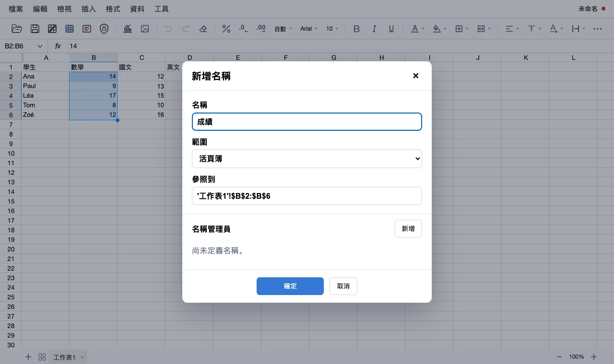

已命名範圍
命名
- 選擇儲存格或範圍。
- 右鍵 › 定義名稱…（或名稱方塊的箭頭 › 名稱管理員）。
- 輸入名稱，選擇範圍，確定。

| 欄位 | 內容 |
|---|---|
| 名稱 | 以字母或 _ 開頭；字母、數字、_ 和 .，無空格；不能是 B2 這樣的位址 |
| 範圍 | 活頁簿：所有工作表都可讀取；某張工作表：僅該表可讀取，並優先於活頁簿的同名名稱 |
| 參照到 | 儲存格或範圍，帶工作表：'工作表1'!$B$2:$B$6 |
使用名稱
=AVERAGE(成績)
=價格*(1+稅率)- 名稱方塊的箭頭列出名稱：選擇一個即選中其所在工作表中的範圍。
- 當選區恰好是已命名範圍時，名稱方塊顯示其名稱。
- 下拉式清單可讀取由位址指定的儲存格範圍。
修改、刪除
在 名稱管理員 中，按一下名稱可重新編輯其欄位；刪除 刪除它；新增 回到空名稱。刪除名稱前，請替換讀取它的公式：它們會保留最後的值，之後不再計算。
名稱儲存在 Excel 檔案中，並可從中讀取。